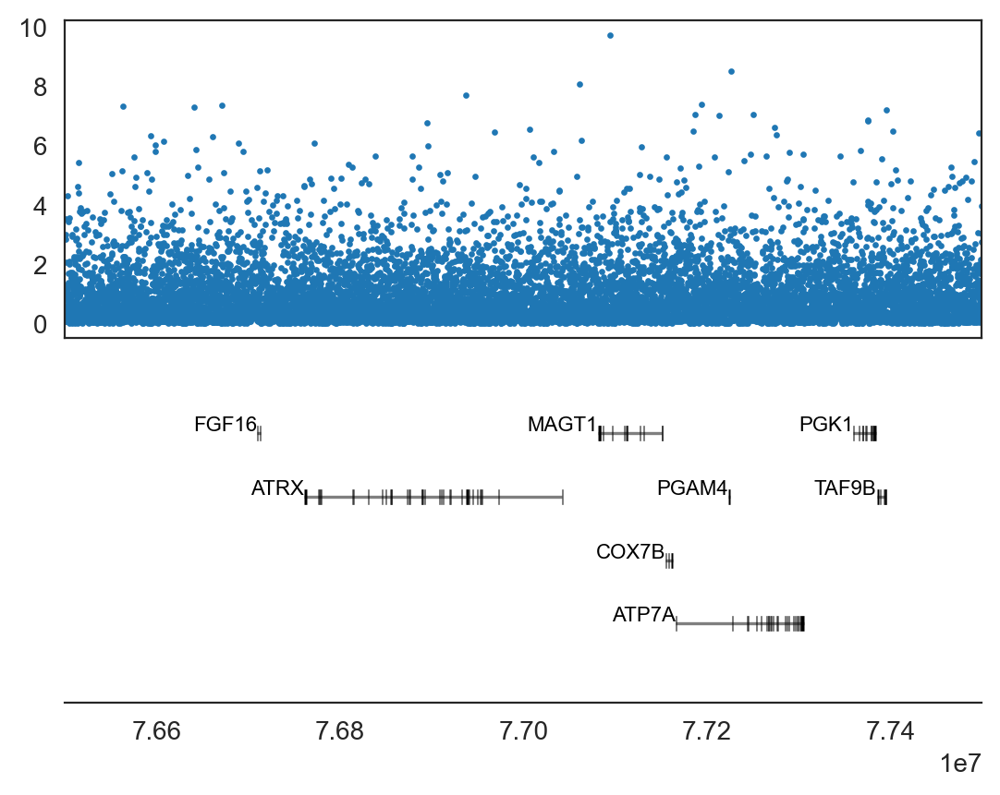
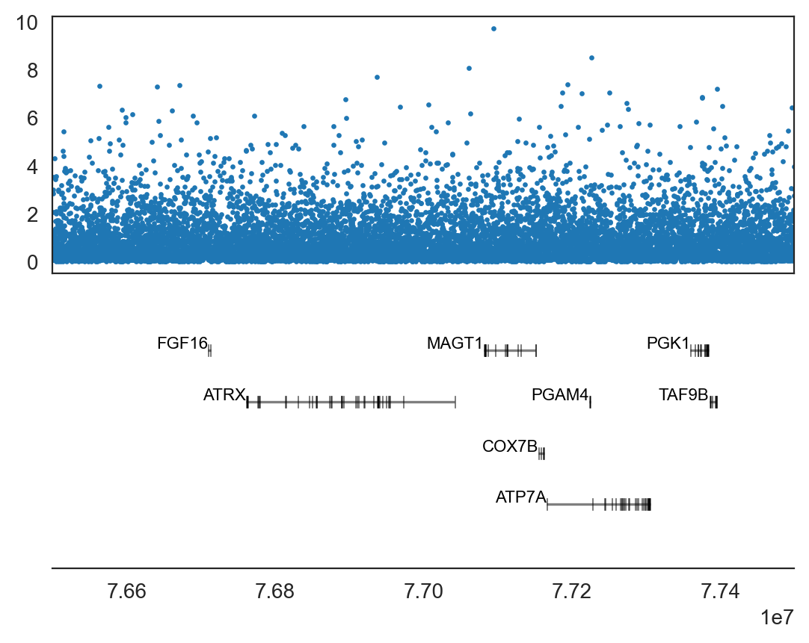

import geneinfo as gi
ax = gi.gene_plot('chrX', 76500000, 77500000, assembly='hg19')
ax.scatter(x, y, s=2, c='tab:blue') ;
geneinfo is a compilation of gene information APIs adapted for use in a Jupyter notebook and some additional utilities. Its API lets you retrieve of information about genes and gene ontologies, plot data together with gene structures (genome browser style), show data on chromosome ideograms, perform gene ontology enrichment analyses and more.
Among many other things, geneinfo lets you plot data in chromosome coordinates and view overlapping gene annotation using gene_plot.
import geneinfo as gi
ax = gi.gene_plot('chrX', 76500000, 77500000, assembly='hg19')
ax.scatter(x, y, s=2, c='tab:blue') ;
You can get brief summaries using gene_info.
Symbol: ATRX (protein-coding) Aliases: JMS, MRX52, RAD54, RAD54L, XH2, XNP, ZNF-HX
ATRX chromatin remodeler
Summary: The protein encoded by this gene contains an ATPase/helicase domain, and thus it belongs to the SWI/SNF family of chromatin remodeling proteins. This protein is found to undergo cell cycle-dependent phosphorylation, which regulates its nuclear matrix and chromatin association, and suggests its involvement in the gene regulation at interphase and chromosomal segregation in mitosis. Mutations in this gene are associated with X-linked syndromes exhibiting cognitive disabilities as well as alpha-thalassemia (ATRX) syndrome. These mutations have been shown to cause diverse changes in the pattern of DNA methylation, which may provide a link between chromatin remodeling, DNA methylation, and gene expression in developmental processes. Multiple alternatively spliced transcript variants encoding distinct isoforms have been reported. [provided by RefSeq, Jul 2017].
Genomic position: X:77504880-77786233 (hg38), HG1426_PATCH:76765832-77047170, X:76760356-77041702 (hg19)
Gene card
Symbol: MAGT1 (protein-coding) Aliases: CDG1CC, IAP, MRX95, OST3B, PRO0756, SLC58A1, XMEN, bA217H1.1
magnesium transporter 1
Summary: This gene encodes a ubiquitously expressed magnesium cation transporter protein that localizes to the cell membrane. This protein also associates with N-oligosaccharyl transferase and therefore may have a role in N-glycosylation. Mutations in this gene cause a form of X-linked intellectual disability (XLID). This gene may have multiple in-frame translation initiation sites, one of which would encode a shorter protein with an N-terminus containing a signal peptide at amino acids 1-29. [provided by RefSeq, Jul 2017].
Genomic position: X:77825747-77899271 (hg38), HG1426_PATCH:77087318-77156547, X:77081861-77151090 (hg19)
Gene card
Get gene ontology terms associated with genes.
go_terms = gi.get_go_terms_for_genes(['ATRX', 'MAGT1'], evidence=['IDA', 'EXP', 'HTP'])
go_terms[:10]823 546
5032 84061
Name: GeneID, dtype: int64['GO:0003682',
'GO:0005654',
'GO:0005783',
'GO:0006334',
'GO:0006338',
'GO:0008250',
'GO:0015616',
'GO:0016604',
'GO:0035064',
'GO:0042393']Show graph for those terms.
Show definitions of those terms.
GO:0003682: chromatin binding
Binding to chromatin, the network of fibers of DNA, protein, and sometimes RNA, that make up the chromosomes of the eukaryotic nucleus during interphase.
GO:0005654: nucleoplasm
That part of the nuclear content other than the chromosomes or the nucleolus.
GO:0005783: endoplasmic reticulum
The irregular network of unit membranes, visible only by electron microscopy, that occurs in the cytoplasm of many eukaryotic cells. The membranes form a complex meshwork of tubular channels, which are often expanded into slitlike cavities called cisternae. The ER takes two forms, rough (or granular), with ribosomes adhering to the outer surface, and smooth (with no ribosomes attached).
GO:0006334: nucleosome assembly
The aggregation, arrangement and bonding together of a nucleosome, the beadlike structural units of eukaryotic chromatin composed of histones and DNA.
GO:0006338: chromatin remodeling
A dynamic process of chromatin reorganization resulting in changes to chromatin structure. These changes allow DNA metabolic processes such as transcriptional regulation, DNA recombination, DNA repair, and DNA replication.
GO:0008250: oligosaccharyltransferase complex
A protein complex that is found in the endoplasmic reticulum membrane of eukaryotes and transfers lipid-linked oligosaccharide precursor to asparagine residues on nascent proteins. The complex includes at least eight non-identical subunits. Different forms of the complex containing distinct subunits have been detected in mammals.
GO:0015616: DNA translocase activity
Generation of movement along a single- or double-stranded DNA molecule, driven by ATP hydrolysis.
GO:0016604: nuclear body
Extra-nucleolar nuclear domains usually visualized by confocal microscopy and fluorescent antibodies to specific proteins.
GO:0035064: methylated histone binding
Binding to a histone in which a residue has been modified by methylation.
GO:0042393: histone binding
Binding to a histone, any of a group of water-soluble proteins found in association with the DNA of eukaryotic or archaeal chromosomes. They are involved in the condensation and coiling of chromosomes during cell division and have also been implicated in gene regulation and DNA replication. They may be chemically modified (methylated, acetlyated and others) to regulate gene transcription.
GO:0099115: chromosome, subtelomeric region
A region of the chromosome, adjacent to the telomere (on the centromeric side) that contains repetitive DNA and sometimes genes. This region is usually heterochromatin.